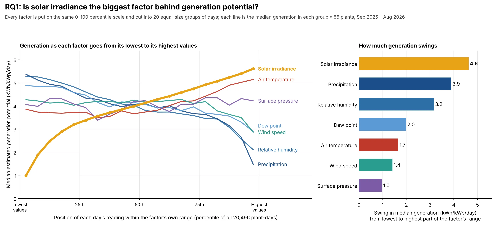
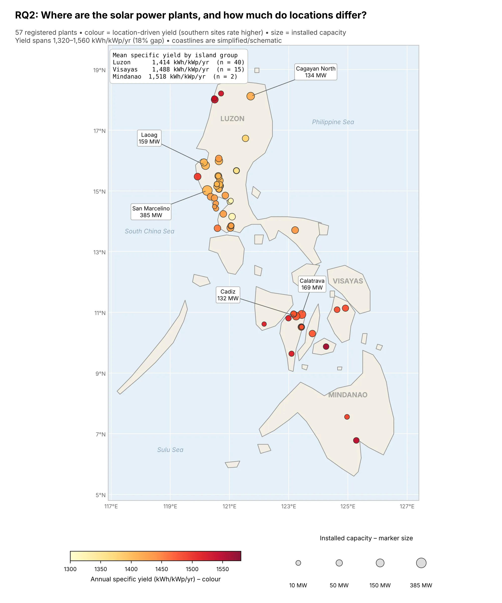
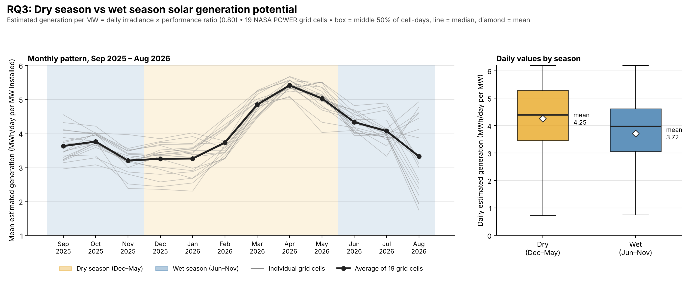

Existing Power Farms
Data on existing power farms as of November 2025 was taken from the relevant DOE regional documents for Luzon, Visayas, and Mindanao.
This is our project, Harnessing the Tropics: Estimating Solar Energy Generation Potential Using Philippine Weather Data. Our goal is to estimate the feasibility and sustainability of solar energy in the Philippines based on current weather data, in line with Sustainable Development Goal 7: Affordable and Clean Energy.
Data Science Team
With record-high electricity rates and geopolitical energy shocks, countless Filipinos nationwide have begun to seek solar energy as a stabler source of energy. But just how feasible could a solar-driven Philippines be, given the country's climate?
It is still unknown how weather parameters, location, and seasonal variation affect solar energy generation in a Philippine context.
With weather data from NASA and information on existing Philippine power farms, we can estimate and evaluate the effect of weather, location, and seasons on solar energy generation.
The data comprises 3 parts:
Dataset size is roughly 20.8k rows of weather data across all Philippine solar power farms.
Data on existing power farms as of November 2025 was taken from the relevant DOE regional documents for Luzon, Visayas, and Mindanao.
Data on awarded solar projects was taken from the DOE's published list of awarded solar projects, including projected capacity information.
Weather conditions were collected from NASA POWER, where daily weather data can be generated for any place using its latitude and longitude.
We gathered solar farm locations and associated weather records to align each plant with the relevant environmental variables used in the analysis.
We examined the relationship between estimated solar energy generation potential and weather parameters such as solar irradiance, temperature, pressure, and wind speed.
We compared solar energy generation potential across selected solar power plant locations in the Philippines to assess spatial variation.
We assessed how estimated solar energy generation potential differs across seasons in the Philippines, using weather patterns over time.
E = C × H × PR
Estimated daily generation (MWh/day) = installed capacity (MW) × daily solar irradiation (kWh/m²/day) × an assumed performance ratio of 0.80. These are modelled estimates, not metered plant output.
Exploratory Analysis · Research Questions
Before testing the hypotheses, we plotted each research question directly: how generation responds to each weather factor, where the plants are and how much their locations differ, and how generation shifts between the dry and wet seasons.



The hypothesis tests that follow check whether these patterns hold up statistically.
Results · The study in a nutshell
Across 19 NASA POWER grid cells covering 57 plants (3,211 MW), estimated generation per MW is higher in the dry season in 18 cells. Even so, the seasonal difference is not statistically significant.
Estimates come from capacity × irradiance × performance ratio, not metered output, over one year (Sep 2025 – Aug 2026).
Hypothesis 1 · Weather
We ranked seven NASA POWER weather parameters by how closely they track estimated generation. Irradiance leads by a wide margin; humidity and rain pull generation down.
Irradiance is an input to the estimate, so part of this near-perfect link is built in. Days from the same plant are not independent; ranking each plant separately gives the same order.
Hypothesis 2 · Location
Raw output mostly reflects how big a plant is (r = −0.10 with irradiance, p = 0.44). Remove the effect of installed capacity and the link to sunlight is clear.
Season matters more than place. Monthly irradiance swings 1.89× over the year, against 1.18× between the best and worst site.
Plants share 19 satellite grid cells, so the effective sample is smaller than 57 and these p-values are optimistic. Mindanao has only two plants.
Hypothesis 3 · Season
On average a grid cell generates more in the dry season than in the wet season. A paired t-test gives p = 0.0998, above the 0.05 cutoff, so the gap could be down to chance and H3 is not supported.
The dry season starts slow. December to February are no sunnier than most wet months; the dry-season lead comes from March to May.
Why not significant? Most cells gain only a little in the dry season, while C01, which holds 40% of all capacity, gains far more. Differences that uneven make the average too uncertain to call.